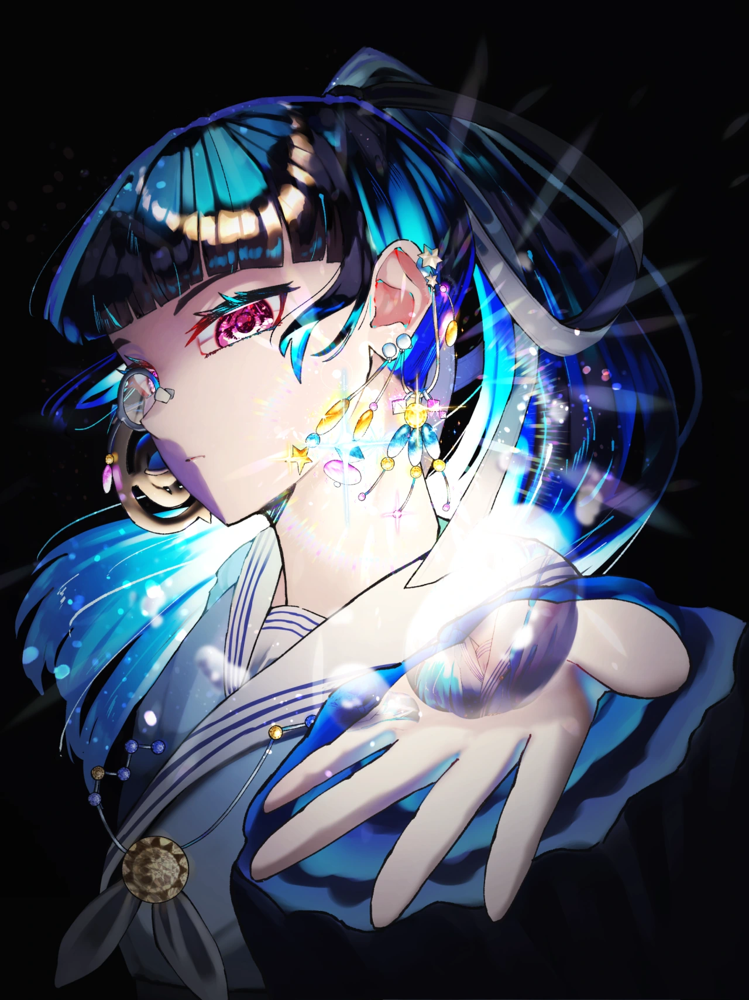

叶奏の備忘録
Illustration × Novel × Develop コントラスト強めの作品を創っています。
イラストでは、光を。 小説では、落差の果てに救われる物語を。 それらをプログラミング等の技術に掛け合わせてアプリケーションの開発を行ったりもしています。
プロフィールと、SNSなどのリンク、参加したイベント、公募歴をまとめています。
これまでに書いたオリジナルイラストをまとめています。
書いている小説の紹介です。本をめくるように、作品を選べます。
作ったアプリケーションやホームページの概要と、使用した技術などを載せています。
イラスト・小説をメインとした、創作を補助するアプリケーションの開発記録です。